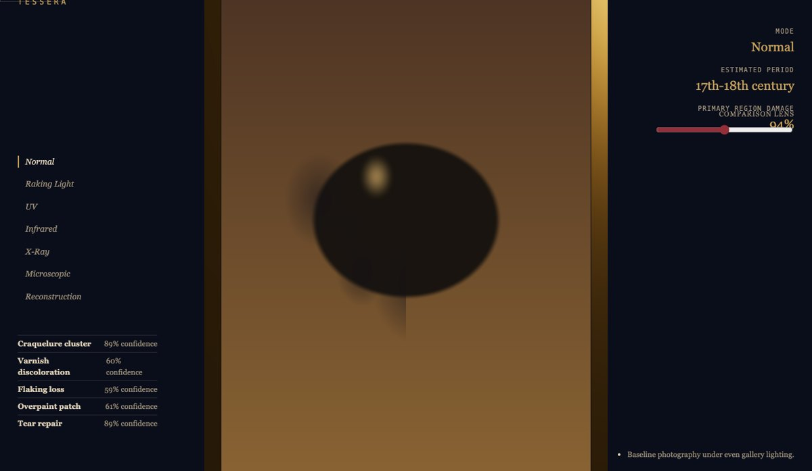
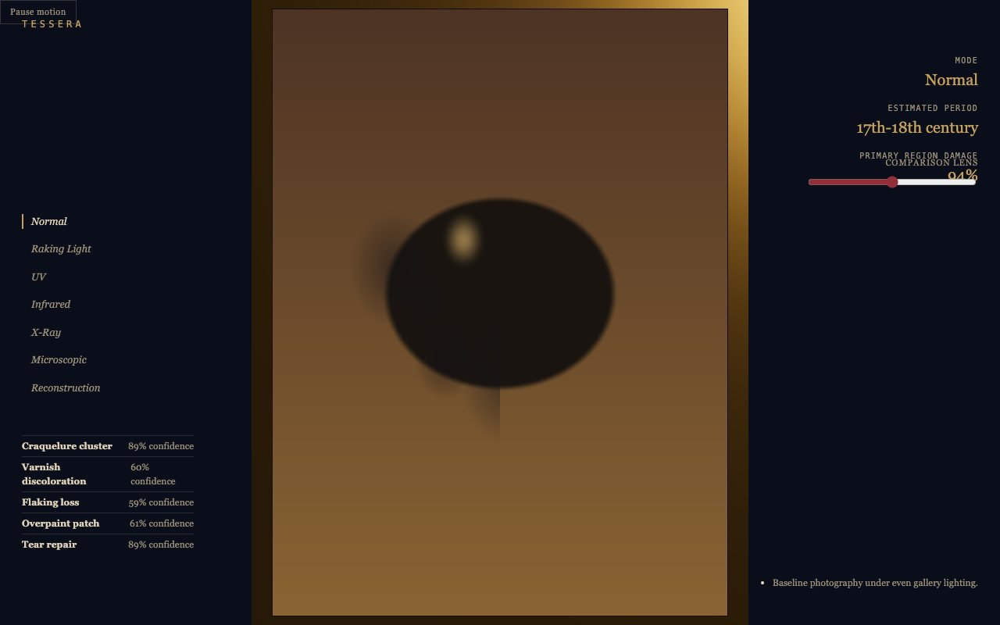
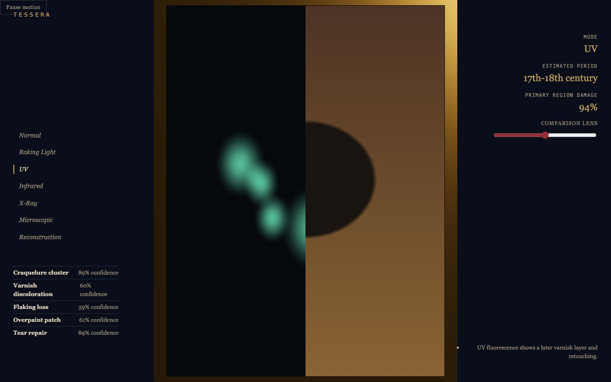

Blender · three.js · motion design · 2026-10
What Does One Painting Look Like Under Seven Kinds Of Light?
A digital art conservation, restoration and provenance laboratory: a single procedural painting rendered entirely by one branching shader across seven imaging modalities, with a comparison lens splitting current damage from a digital reconstruction, and navigation labels living in the conservation frame rather than a top bar.

Built from blueprint 09 of a written build book (Advanced Engineering Build Book, Volume VIII) as one vertical slice, using the five-tool-design-pipeline skill: an Awesome Design file for type/spacing scale (serif italic, no top bar, the third no-panel treatment in the volume), the Taste/Impeccable checklist, Playwright including modality and comparison-lens pixel-sample checks, Three.js as the product. Everything is synthetic: the painting is a procedural generative composition (there is no scanned artwork in this project), and the 5 damage regions and conservation log come from a seeded generator. Not built: a real scanned-painting pipeline, image pyramids/tiles, PostgreSQL, true pointer-drag for the lens, auth.
01 — The problem
The book's rule for this blueprint is that each chapter changes imaging modality (normal, raking light, UV, infrared, X-ray, microscopic, reconstruction), a draggable lens compares current and restored states, and navigation lives in the conservation frame rather than a conventional top bar. That rules out both a static painting image and the shared panel layout every earlier blueprint in the volume uses.
02 — What I built
One repository with the whole pipeline.
- A scripted asset:
model/build.pybuilds a gilded frame and an examination easel, exports GLBs, renders a poster. - A domain model: a deterministic craquelure density field, a damage-region score, and a toy century-range estimate, all pure and unit-tested.
- A browser runtime where the painting is one plane whose fragment shader branches on an integer modality uniform into seven genuinely different renders, plus a comparison-lens uniform that splits the frame between the current (damaged) and restored states independent of modality.
- An intro that resolves a painting from candlelight down to its canvas fibers, switches through UV and infrared, reconstructs a missing region, and hands off through a light mask.
- Fallbacks: poster for no WebGL, static keyframes for reduced motion.
03 — How it was built
- 01
Seven modalities, one shader
There is no scanned painting anywhere in this project.
normal,raking-light,uv,infrared,xray,microscopicandreconstructionare seven branches of one GLSL function over the same UV coordinates, so switching modality never swaps an asset, only a uniform. - 02
A test bug found by its own false negative
The first version of the 'modality actually changes the render' test sampled the exact viewport center, which happened to sit precisely on the comparison lens's default 50% split, the one place the shader always shows the mode-independent 'restored' state. Two genuinely different modalities produced identical pixels at that one coordinate, and the test correctly failed, pointing straight at the real mechanism. Fixed by opening the lens fully for that specific check.
// Sample left of the comparison lens so the pixel is on the mode-dependent // 'current' side, not the mode-independent 'restored' side. await page.goto("/?skip=1&t=0&lens=1"); - 03
No top bar, by the book's own rule
Every other blueprint in this volume uses a shared top header and (except LUCENT and EIDOLON's partial version) a bordered panel. This one has neither: the brand mark, pause toggle, modality rail, readout, comparison lens, damage list and log all live directly against the conservation frame's edges.
04 — Results
UV mode with the comparison lens open:


Checks. 10 unit and API tests, 19 Playwright tests including the modality and lens pixel-sample checks, clean typecheck.
Performance, SwiftShader (no GPU claim). 9 draw calls, 136 triangles (the painting is a single flat plane), 565 KB gzipped JS. Median 16.7 ms per frame.
05 — What I'd do next
- Measure on a physical GPU and a mid-range phone.
- Replace the procedural composition with a real high-resolution scan and an image-pyramid tiling pipeline.
- Upgrade the comparison lens from a slider to true pointer-drag with a visible handle, per the book's original brief.